This section explains in detail how to display chart(s) based on the metrics. It will explain how
The picture above shows a brief overview of the functions of the Graphs page. It contains features to create a filtered metric in real time, to select a predefined filtered metric, to choose chart options and to export both physically and digitally.
To display a chart from a metric that has already been made choose the metric from the dropbox:

Then in the split pane below the user will see the metric IDs that are generated with the correspondig filters:
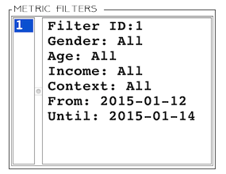
To add the filtered metric, the user presses on Add button which results in the Chart dataset field to become populated:
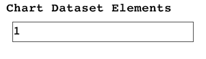
Displaying the chart happens after choosing the chart options and pressing on Create Chart: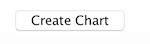
This results in a window asking to input a name for the chart. The user has two options:This happens by pressing Ctrl and selecting the filtered metrics and pressing Add Group:
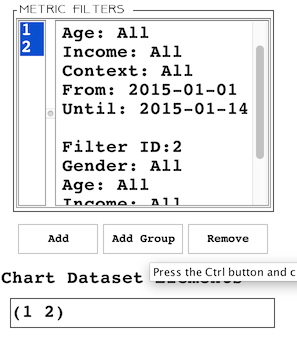

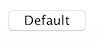
The user can apply the following options on their chart:
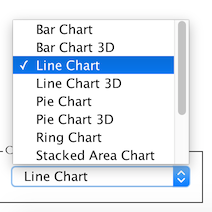

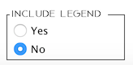
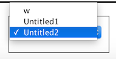
Comparing charts can happen by having already created at least 2 charts otherwise the Compare Charts button would stay inactive. After the user has at least 2 premade charts, they click on Compare Charts button:
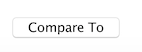
This results in a dialogue window prompting the user to choose a chart to compare the currently displayed chart to one from the dropdown list:
After this the user presses OK and both charts are displayed next to each other.
To save the chart as a picture, the user presses Save As button:
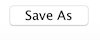
This results in a dialogue to input a name for the chart
After this, the user is prompted to choose the file format of the image and presses OK:
To print a chart, the user presses Print Chart button:
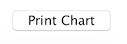